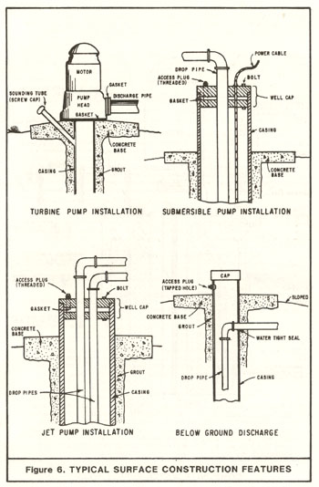
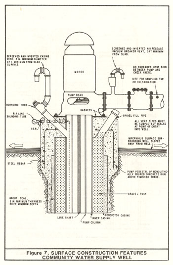

|
CHAPTER II. STANDARDS
Section 10. Surface Construction Features.
- 
Openings. Openings into the top of the well which are designed to provide
access to the well, i.e., for measuring, chlorinating, adding gravel, etc.,
shall be protected against entrance of surface waters or foreign matter by
installation of watertight caps or plugs. Access openings designed to permit
the entrance or egress of air or gas (air or casing vents) shall terminate
above the ground and above known flood levels and shall be protected against
the entrance of foreign material by installation of down-turned and screened
"U" bends (see Figures 6 and 7).
All other openings (holes, crevices, cracks, etc.) shall be sealed.
A "sounding tube",Note 12 taphole with plug, or similar access (see Figure 6) for
the introduction of water level measuring devices shall be affixed to the
casing of all wells. For wells fitted with a "well cap" the cap shall have a
removable plug for this purpose.
- 
Where the pump is installed directly over the casing, a watertight seal
(gasket) shall be placed between the pump head and the pump base (slab), or a
water-tight seal (gasket) shall be placed between the pump base and the rim
of the casing, or a "well cap" shall be installed to close the annular
opening between the casing and the pump column pipe (see Figure 6 and 7).
- Where the pump is offset from the well or where a submersible pump is
used, the opening between the well casing and any pipes or cables which enter
the well shall be closed by a watertight seal or "well cap".
- If the pump is not installed immediately or if there is a prolonged
interruption in construction of the well, a watertight cover shall be
installed at the top of the casing.
- A watertight seal or gasket shall be placed between the pump discharge
head and the discharge line; or, in the event of a below-ground discharge,
between the discharge pipe and discharge line (see Figures 6 and 7).
- Bases. A concrete base or pad, sometimes called a pump block or pump
pedestal, shall be constructed at ground surface around the top of the well
casing and contact the annular seal, unless the top of the casing is below
ground surface, as provided by Subsection B, below.
The base shall be free of cracks, voids, or other significant defects likely
to prevent water tightness. Contacts between the base and the annular seal,
and the base and the well casing, must be water tight and must not cause the
failure of the annular seal or well casing. Where cement-based annular
sealing material is used, the concrete base shall be poured before the
annular seal has set, unless otherwise approved by the enforcing agency.
The upper surface of the base shall slope away from the well casing. The
base shall extend at least two feet laterally in all directions from the
outside of the well boring, unless otherwise approved by the enforcing
agency. The base shall be a minimum of
4 inches thick.
A minimum base thickness of 4 inches is normally acceptable for small
diameter, single-user domestic wells. The base thickness should be increased
for larger wells. Shape and design requirements for well pump bases vary
with the size, weight, and type of pumping equipment to be installed,
engineering properties of the soil on which the base is to be placed, and
local environmental conditions. A large variety of base designs have been
used. The Vertical Turbine Pump Association has developed a standard base
design for large lineshaft turbine pumps. This design consists of a square,
concrete pump base whose design is dependent on bearing weight and site soil
characteristics.
Where freezing conditions require the use of a pitless adapter, and the well
casing and annular seal do not extend above ground surface or into a pit or
vault, a concrete base or pad shall be constructed as a permanent location
monument for the covered well. The base shall be 3 feet in length on each
side and 4 inches in thickness, unless otherwise approved by the enforcing
agency. The base shall have a lift-out section, or equivalent, to allow
access to the well. The lift-out shall facilitate inspection and repair of
the well.
- Where the well is to be gravel packed and the pack extends to the surface,
a watertight cover shall be installed between the conductor casing and the
inner casing (see also Section 9, Subsection B, Item 5 and Figure 5).
- Well Pits or Vaults. The use of well pits, vaults, or equivalent
features to house the top of a well casing below ground surface shall be
avoided, if possible, because of their susceptibility to the entrance of
poor-quality water, contaminants and pollutants. Well pits or vaults can
only be used if approval is obtained from the enforcing agency. A substitute
device, such as a pitless adapter or pitless adapter unit (a variation),
should almost always be used in place of a vault or pit.
Pitless adapters and units were developed for use in areas where prolonged
freezing occurs, and below ground (frost line) discharges are common. Both
the National Sanitation Foundation and
Water Systems Council have developed
standards for the manufacture and installation of pitless adapters and units.
(See Appendix E, Bibliography, Bulletin 74-81.)
If a pit or vault is used it shall be watertight and structurally sound. The
vault shall extend from the top of the annular seal to at least ground
surface.
The vault shall contact the annular seal in a manner to form a watertight and
structurally sound connection. Contacts between the vault and the annular
seal, and the vault and the well casing, if any, shall not fail or cause the
failure of the well casing or annular seal.
Where cement-based annular seal materials are used, the vault shall be set
into or contact the annular seal material before it sets, unless otherwise
approved by the enforcing agency. If bentonite-based sealing material is
used for the annular seal, the vault should be set into the bentonite before
it is fully hydrated.
Cement-based sealing material shall be placed between the outer walls of the
vault and the excavation into which it is placed to form a proper,
structurally sound foundation for the vault, and to seal the space between
the vault and excavation.
The sealing material surrounding a vault shall extend from the top of the
annular seal to ground surface unless precluded in areas of freezing. If
cement-based sealing material is used for both the annular seal and the space
between the excavation and vault, the sealing material shall be emplaced in a
'continuous pour'. In other words, cement-based sealing material shall be
placed between the vault and excavation and contact the cement-based annular
seal before the annular seal has set.
The vault cover or lid shall be watertight but shall allow the venting of
gases. The lid shall be fitted with a security device to prevent unauthorized
access. The outside of the lid shall be clearly and permanently labeled
'WATER WELL'. The vault and its lid shall be strong enough to support
vehicular traffic where such traffic might occur.
The top of the vault shall be set at, or above, grade so that drainage is
away from the vault. The top of the well casing contained within the vault
shall be covered in accordance with requirements under Subsection A, above,
so that water, contaminants, and pollutants that
may enter the vault will not enter the well casing. The cover shall be
provided with a pressure relief or venting device for gases.
- Enclosure of Well and Appurtenances. In community water supply wells, the
well and pump shall be located in a locked enclosure to exclude access by
unauthorized persons.
- Pump Blowoff. When there is a blowoff or drain line from the pump
discharge, it shall be located above any known flood levels and protected
against the possibility of backsiphonage or backpressure. The blowoff or
drain line shall not be connected to any sewer or storm drain except when
connected through an air gap.
- Air Vents. In community water supply wells to minimize the possibility of
contamination caused by the creation of a partial vacuum during pumping, a
casing vent shall be installed (Figure 7). In addition, to release air
trapped in the pump column when the pump is not running, air release vents
shall be installed (Figure 7). Air vents are also recommended for other
types of wells except those having jet pump installations requiring positive
pressure (which cannot have a vent).
- Backflow Prevention. All pump discharge pipes not discharging or open to
the atmosphere shall be equipped with an automatic device to prevent backflow
and/or back siphonage into a well. Specific backflow prevention measures are
required for drinking water supply wells as prescribed in Title 17, Public
Health, California Code of Regulations (Sections 7583-7585 and 7601-7605,
effective June 25, 1987).
Irrigation well systems, including those used for landscape irrigation, and
other well systems that employ, or which have been modified to employ,
chemical feeders or injectors shall be equipped with a backflow prevention
device(s) approved by the enforcing agency.
|